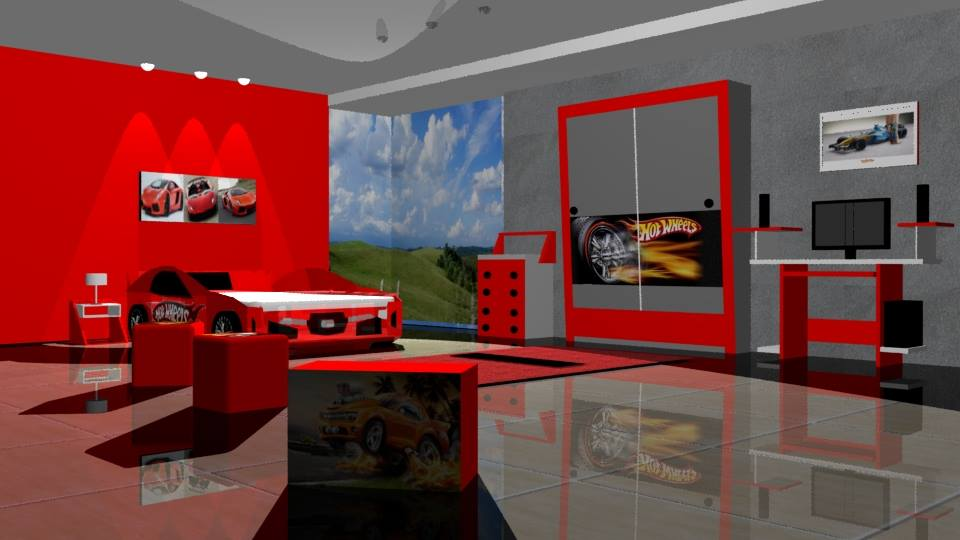
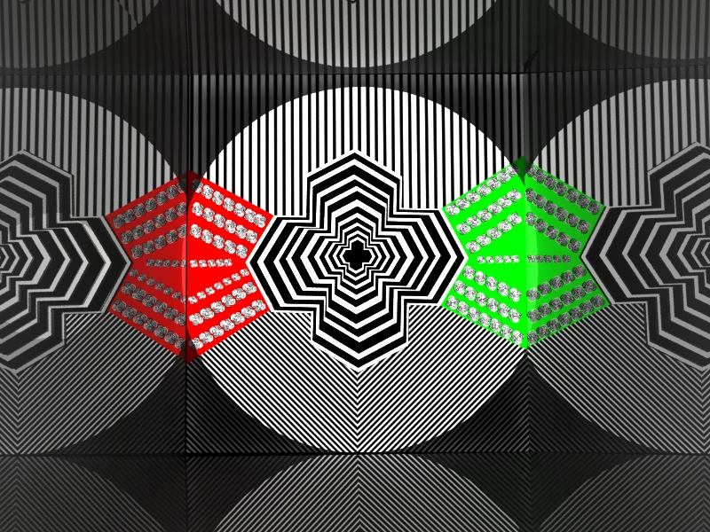
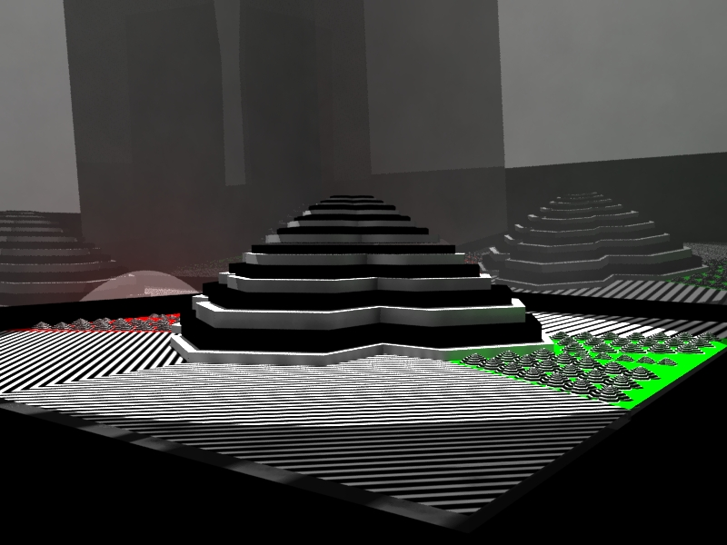

Me chamo Antonio e sou formado em Produção Multimídia pela Universidade Metodista de São Paulo.
Essa formação me dá uma ampla visão do universo das mídias digitais. Por isso, tenho conhecimentos em
produção gráfica, produção de vídeos, games e web design.
ATENDIMENTO
Valorizo muito o contato com o cliente porque percebi que, muitas vezes, precisam de mais atenção.
Trabalhei em atendimento e sei bem disso. Assim, busco manter contato constante e responder sempre que
solicitado, tudo com muita transparência.
TRABALHOS ACADÊMICOS
Com o grupo de faculdade, trabalhei em diversos projetos acadêmicos que podem ser vistos neste site.
Me sinto grato por ter tido a chance de trabalhar com pessoas talentosas em outras áreas e que
enriqueceram os trabalhos, cada uma a seu modo.
REVISTA "10 AO CUBO"
SITES
VÍDEOS EM QUE TRABALHEI
DIVERSOS
×
SITES ACADÊMICOS
*Por conter sites em Flash e não responsivos, estão em vídeo para facilitar a visualização
Limiar Studio
Projeto acadêmico que consistiu em apresentar um estúdio de produção de
conteúdo multimídia. Vencemos desafios que necessitaram do talento único de
cada um dos 11 integrantes. Havia programadores, ilustradores, designers gráficos,
pesquisadores e até um historiador! A cada apresentação de projeto, uma chance
de sentir orgulho de trabalhar nessa equipe. Estando em um computador ou notebook com o plugin do Adobe Flash
instalado no navegador, acesse clicando aqui!
Era uma Noite de Luar
Projeto vencedor do Prêmio Calouro Destaque da Universidade Metodista
Aqui, fizemos uma HQ eletrônica que conta uma estória fictícia baseada no período
da ditadura militar no Brasil. Além de envolver diversas horas de planejamento,
ilustração, roteirização e programação, foi uma oportunidade para o grupo conhecer
melhor esse período que, até hoje, deixa profundas marcas em toda a nossa sociedade.
Estando em um computador ou notebook com o plugin do Adobe Flash
instalado no navegador, acesse clicando aqui!
Espaço Confeitaria
Enquanto estudava HTML 5 e CSS3, fui desafiado a construir um site do zero. Por gostar muito de confeitaria,
que é um dos meus hobbies, decidi que esse seria o tema do novo site. Eu o apresento em vídeo por ele
não ser responsivo e isso facilitar a visualização em dispositivos móveis. Estando em um computador ou notebook,
ele é perfeitamente acessável clicando aqui!
×
Produção de Vídeos
Descobrindo o Natal
O personagem principal é baseado em uma animação que gostamos muito, Pingu. Quisemos aqui incentivar a
leitura. Por se tratar de uma animação em stop-motion, foi um trabalho árduo de posicionamento de personagens
no cenário. A cada frame (foto/cena), os personagens são posicionados de forma a parecerem, após a organização
de cada frame, que estão em movimento. No final, todo o suor valeu a pena, nos sentimos gratos pelo resultado!
Viagem Fantástica
Mais um trabalho de animação, que teve como objetivo incentivar a leitura.
×
Diversos
Dias de Luta
Protótipo de game, derivado de nossa HQ eletrônica (Era Uma Noite de Luar, vencedora
do Prêmio Calouro Destaque Metodista). O objetivo do protagonista é chegar ao esconderijo
sem ser visto pelos soldados que patrulham as ruas em busca de pessoas violando o toque de recolher,
em vigor na ditadura militar brasileira. Utilizamos Adobe Photoshop para a criação das texturas,
Autodesk Maya para a modelagem e animação de objetos e Unity para a programação (em Javascript)
e montagem da fase.
Quarto Hot Wheels

Exercício de modelagem 3D em Autodesk Maya
Momento Inspirado

Exercício de modelagem 3D em Autodesk Maya em que tomei por base os trabalhos do arftista Victor Vasarely.
Momento Inspirado 2

Exercício de modelagem 3D em Autodesk Maya em que tomei por base os trabalhos do arftista Victor Vasarely.